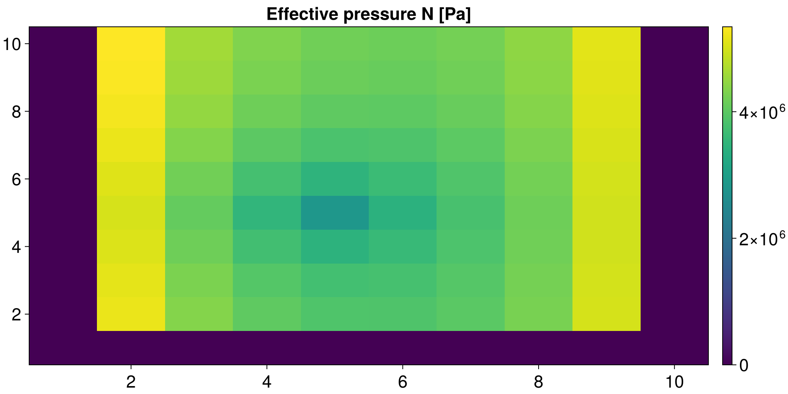

Shakti
Shakti is a transient model, it owns its grid and state and is solved at every time step. FastHydrology only wraps it in ShaktiHydroModel and TimeSimulation, all the physics lives in Shakti.jl, see there for the model, its options and real-data examples.
Both packages export run! and step!, so call them as FastHydrology.run!.
using FastHydrology
using Shakti
using CairoMakieA small Shakti domain: sloped bed, ocean/land/other-basin boundaries, one moulin.
nx, ny = 10, 10
grid = Shakti.Grid(nx, ny, 1e4, 1e4)
state = Shakti.State(grid)
p = Shakti.ModelParameters(e_v = 0.0)
mi = Shakti.ConstantMeltInput()
sl = Shakti.RegularizedCoulombSlidingLaw(0.25)
mask = fill(Shakti.GROUNDED, nx, ny)
mask[end, :] .= Shakti.OCEAN
mask[1, :] .= Shakti.LAND
mask[:, 1] .= Shakti.OTHER_BASIN
A_visc = fill(5e-25, nx, ny)
zb = repeat(reshape(-0.02 .* grid.x, nx, 1), 1, ny) # sloped bed
zs = zb .+ 1000.0
b = fill(0.01, nx, ny) # initial gap height
G = fill(0.06, nx, ny)
ub_x = fill(1e-6, nx + 1, ny)
ub_y = zeros(nx, ny + 1)
ieb = zeros(nx, ny)
ieb[5, 5] = 3 / (grid.dx * grid.dy) # moulin
taub_x = zeros(nx + 1, ny)
taub_y = zeros(nx, ny + 1)
Shakti.set_initial_conditions!(state, grid, p, sl, mask, A_visc, zb, zs, b, G, ub_x, ub_y, ieb, taub_x, taub_y)
ls = Shakti.CholeskyDirectSolver(grid)
ps = Shakti.PicardSolver(500, 1e-6, ls, grid)Shakti.PicardSolver{Float64, Shakti.CholeskyDirectSolver{SparseArrays.CHOLMOD.Factor{Float64, Int64}, Shakti.SparseAssembledLinearSystem{Float64}, Vector{Float64}}, Shakti.NoHeadRelaxation, Matrix{Float64}}(500, 1.0e-6, Shakti.CholeskyDirectSolver{SparseArrays.CHOLMOD.Factor{Float64, Int64}, Shakti.SparseAssembledLinearSystem{Float64}, Vector{Float64}}(Shakti.SparseAssembledLinearSystem{Float64}(sparse([1, 2, 11, 1, 2, 3, 12, 2, 3, 4 … 97, 98, 99, 89, 98, 99, 100, 90, 99, 100], [1, 1, 1, 2, 2, 2, 2, 3, 3, 3 … 98, 98, 98, 99, 99, 99, 99, 100, 100, 100], [1.0, 0.0, 0.0, 0.0, 1.0, 0.0, 0.0, 0.0, 1.0, 0.0 … 0.0, 1.0, 0.0, 0.0, 0.0, 1.0, 0.0, 0.0, 0.0, 1.0], 100, 100), [0.0, 0.0, 0.0, 0.0, 0.0, 0.0, 0.0, 0.0, 0.0, 0.0 … 0.0, 0.0, 0.0, 0.0, 0.0, 0.0, 0.0, 0.0, 0.0, 0.0], [1 40 … 376 424; 5 45 … 381 428; … ; 33 80 … 416 456; 37 85 … 421 460], [4 44 … 380 427; 8 49 … 385 431; … ; 36 84 … 420 459; 0 0 … 0 0], [0 0 … 0 0; 2 41 … 377 425; … ; 30 76 … 412 453; 34 81 … 417 457], [39 87 … 423 0; 43 91 … 426 0; … ; 78 126 … 454 0; 83 131 … 458 0], [0 3 … 330 378; 0 7 … 335 383; … ; 0 35 … 370 418; 0 38 … 374 422]), SparseArrays.CHOLMOD.Factor{Float64, Int64}
type: LLt
method: simplicial
maxnnz: 648
nnz: 648
success: true
, [0.0, 0.0, 0.0, 0.0, 0.0, 0.0, 0.0, 0.0, 0.0, 0.0 … 0.0, 0.0, 0.0, 0.0, 0.0, 0.0, 0.0, 0.0, 0.0, 0.0]), false, 0, Shakti.NoHeadRelaxation(), [0.0 0.0 … 0.0 0.0; 0.0 0.0 … 0.0 0.0; … ; 0.0 0.0 … 0.0 0.0; 0.0 0.0 … 0.0 0.0], [0.0 0.0 … 0.0 0.0; 0.0 0.0 … 0.0 0.0; … ; 0.0 0.0 … 0.0 0.0; 0.0 0.0 … 0.0 0.0], 1)Wrap it, 6 steps of 1 hour.
dt, tsteps = 3600.0, 6
shakti_sim = Shakti.Simulation(grid, state, tsteps, dt, p, "implicit", String[], mi, sl; ps = ps)
model = ShaktiHydroModel(shakti_sim)
time_sim = TimeSimulation(model)TimeSimulation{ShaktiHydroModel{Shakti.Simulation{Float64, Shakti.ModelParameters{Float64, Int64, Int64, Float64}, Shakti.EllipticHeadScheme{Shakti.PicardSolver{Float64, Shakti.CholeskyDirectSolver{SparseArrays.CHOLMOD.Factor{Float64, Int64}, Shakti.SparseAssembledLinearSystem{Float64}, Vector{Float64}}, Shakti.NoHeadRelaxation, Matrix{Float64}}}, Shakti.ImplicitGapScheme, Shakti.MeltTerms{true, true, true, true, true}, Shakti.WithOpenBySliding, Shakti.StandardCreep, Shakti.NoDiffusion, Shakti.NoObserver, Shakti.Grid{Float64, Vector{Float64}}, Shakti.State{Matrix{Float64}}, Shakti.ConstantMeltInput, Shakti.Arithmetic, Shakti.RegularizedCoulombSlidingLaw{Float64}, Shakti.NoCellGapClamping, Shakti.NoCellNClamping, Shakti.FixedTimeStep}}}(ShaktiHydroModel{Shakti.Simulation{Float64, Shakti.ModelParameters{Float64, Int64, Int64, Float64}, Shakti.EllipticHeadScheme{Shakti.PicardSolver{Float64, Shakti.CholeskyDirectSolver{SparseArrays.CHOLMOD.Factor{Float64, Int64}, Shakti.SparseAssembledLinearSystem{Float64}, Vector{Float64}}, Shakti.NoHeadRelaxation, Matrix{Float64}}}, Shakti.ImplicitGapScheme, Shakti.MeltTerms{true, true, true, true, true}, Shakti.WithOpenBySliding, Shakti.StandardCreep, Shakti.NoDiffusion, Shakti.NoObserver, Shakti.Grid{Float64, Vector{Float64}}, Shakti.State{Matrix{Float64}}, Shakti.ConstantMeltInput, Shakti.Arithmetic, Shakti.RegularizedCoulombSlidingLaw{Float64}, Shakti.NoCellGapClamping, Shakti.NoCellNClamping, Shakti.FixedTimeStep}}(Shakti.Simulation{Float64, Shakti.ModelParameters{Float64, Int64, Int64, Float64}, Shakti.EllipticHeadScheme{Shakti.PicardSolver{Float64, Shakti.CholeskyDirectSolver{SparseArrays.CHOLMOD.Factor{Float64, Int64}, Shakti.SparseAssembledLinearSystem{Float64}, Vector{Float64}}, Shakti.NoHeadRelaxation, Matrix{Float64}}}, Shakti.ImplicitGapScheme, Shakti.MeltTerms{true, true, true, true, true}, Shakti.WithOpenBySliding, Shakti.StandardCreep, Shakti.NoDiffusion, Shakti.NoObserver, Shakti.Grid{Float64, Vector{Float64}}, Shakti.State{Matrix{Float64}}, Shakti.ConstantMeltInput, Shakti.Arithmetic, Shakti.RegularizedCoulombSlidingLaw{Float64}, Shakti.NoCellGapClamping, Shakti.NoCellNClamping, Shakti.FixedTimeStep}(6, Base.RefValue{Float64}(3600.0), Shakti.ModelParameters{Float64, Int64, Int64, Float64}(1000.0, 1027.0, 910.0, 9.81, 1.787e-6, 3.0, 0.0001, 334000.0, 0.1, 2.0, 0.0, 7.5e-8, 4220.0, 0.0, 0.0, Inf, -Inf, Inf, 0.0, true, true, true, true, true, 3, 2, 0.3333333333333333), Shakti.EllipticHeadScheme{Shakti.PicardSolver{Float64, Shakti.CholeskyDirectSolver{SparseArrays.CHOLMOD.Factor{Float64, Int64}, Shakti.SparseAssembledLinearSystem{Float64}, Vector{Float64}}, Shakti.NoHeadRelaxation, Matrix{Float64}}}(Shakti.PicardSolver{Float64, Shakti.CholeskyDirectSolver{SparseArrays.CHOLMOD.Factor{Float64, Int64}, Shakti.SparseAssembledLinearSystem{Float64}, Vector{Float64}}, Shakti.NoHeadRelaxation, Matrix{Float64}}(500, 1.0e-6, Shakti.CholeskyDirectSolver{SparseArrays.CHOLMOD.Factor{Float64, Int64}, Shakti.SparseAssembledLinearSystem{Float64}, Vector{Float64}}(Shakti.SparseAssembledLinearSystem{Float64}(sparse([1, 2, 11, 1, 2, 3, 12, 2, 3, 4 … 97, 98, 99, 89, 98, 99, 100, 90, 99, 100], [1, 1, 1, 2, 2, 2, 2, 3, 3, 3 … 98, 98, 98, 99, 99, 99, 99, 100, 100, 100], [1.0, 0.0, 0.0, 0.0, 1.0, 0.0, 0.0, 0.0, 1.0, 0.0 … 0.0, 1.0, 0.0, 0.0, 0.0, 1.0, 0.0, 0.0, 0.0, 1.0], 100, 100), [0.0, 0.0, 0.0, 0.0, 0.0, 0.0, 0.0, 0.0, 0.0, 0.0 … 0.0, 0.0, 0.0, 0.0, 0.0, 0.0, 0.0, 0.0, 0.0, 0.0], [1 40 … 376 424; 5 45 … 381 428; … ; 33 80 … 416 456; 37 85 … 421 460], [4 44 … 380 427; 8 49 … 385 431; … ; 36 84 … 420 459; 0 0 … 0 0], [0 0 … 0 0; 2 41 … 377 425; … ; 30 76 … 412 453; 34 81 … 417 457], [39 87 … 423 0; 43 91 … 426 0; … ; 78 126 … 454 0; 83 131 … 458 0], [0 3 … 330 378; 0 7 … 335 383; … ; 0 35 … 370 418; 0 38 … 374 422]), SparseArrays.CHOLMOD.Factor{Float64, Int64}
type: LLt
method: simplicial
maxnnz: 648
nnz: 648
success: true
, [0.0, 0.0, 0.0, 0.0, 0.0, 0.0, 0.0, 0.0, 0.0, 0.0 … 0.0, 0.0, 0.0, 0.0, 0.0, 0.0, 0.0, 0.0, 0.0, 0.0]), false, 0, Shakti.NoHeadRelaxation(), [0.0 0.0 … 0.0 0.0; 0.0 0.0 … 0.0 0.0; … ; 0.0 0.0 … 0.0 0.0; 0.0 0.0 … 0.0 0.0], [0.0 0.0 … 0.0 0.0; 0.0 0.0 … 0.0 0.0; … ; 0.0 0.0 … 0.0 0.0; 0.0 0.0 … 0.0 0.0], 1)), Shakti.ImplicitGapScheme(), Shakti.MeltTerms{true, true, true, true, true}(), Shakti.WithOpenBySliding(), Shakti.StandardCreep(), Shakti.NoDiffusion(), Shakti.NoObserver(), Shakti.Grid{Float64, Vector{Float64}}(10, 10, 10000.0, 10000.0, 1111.111111111111, 1111.111111111111, [0.0, 1111.111111111111, 2222.222222222222, 3333.3333333333335, 4444.444444444444, 5555.555555555556, 6666.666666666667, 7777.777777777777, 8888.888888888889, 10000.0], [0.0, 1111.111111111111, 2222.222222222222, 3333.3333333333335, 4444.444444444444, 5555.555555555556, 6666.666666666667, 7777.777777777777, 8888.888888888889, 10000.0], 1.2345679012345679e6, 1.2345679012345679e6), Shakti.State{Matrix{Float64}}([0.0 0.0 … 0.0 0.0; -22.22222222222222 432.7732277777778 … 432.7732277777778 432.7732277777778; … ; -177.77777777777777 277.21767222222223 … 277.21767222222223 277.21767222222223; -200.0 5.400000000000034 … 5.400000000000034 5.400000000000034], [0.0 0.0 … 0.0 0.0; 0.0 4.4635053645e6 … 4.4635053645e6 4.4635053645e6; … ; 0.0 4.4635053645e6 … 4.4635053645e6 4.4635053645e6; 0.0 2.0149740000000002e6 … 2.0149740000000002e6 2.0149740000000002e6], [8.9271e6 8.9271e6 … 8.9271e6 8.9271e6; 8.9271e6 8.927010729e6 … 8.927010729e6 8.927010729e6; … ; 8.9271e6 8.927010729e6 … 8.927010729e6 8.927010729e6; 8.9271e6 8.9271e6 … 8.9271e6 8.9271e6], [0.0 0.0 … 0.0 0.0; 0.0 0.01 … 0.01 0.01; … ; 0.0 0.01 … 0.01 0.01; 0.0 0.0 … 0.0 0.0], [0.05 0.05 … 0.05 0.05; 0.05 0.045000000000000005 … 0.045000000000000005 0.045000000000000005; … ; 0.05 0.045000000000000005 … 0.045000000000000005 0.045000000000000005; 0.05 0.05 … 0.05 0.05], [0.0 0.0 … 0.0 0.0; 0.0 0.01 … 0.01 0.01; … ; 0.0 0.01 … 0.01 0.01; 0.0 0.0 … 0.0 0.0], [0.0 0.0 … 0.0 0.0; 0.0 5.0e-7 … 5.0e-7 5.0e-7; … ; 0.0 5.0e-7 … 5.0e-7 5.0e-7; 0.0 0.0 … 0.0 0.0], [1.7964071856287425e-7 4.9509095180636643e-5 … 4.9509095180636643e-5 4.9509095180636643e-5; 1.7964071856287425e-7 5.19635922614491e-5 … 5.19635922614491e-5 5.19635922614491e-5; … ; 1.7964071856287425e-7 2.614679402945409e-5 … 2.614679402945409e-5 2.614679402945409e-5; 1.7964071856287425e-7 2.369229694864164e-5 … 2.369229694864164e-5 2.369229694864164e-5], [0.0 0.0 … 0.0 0.0; 0.0 0.16604656968541545 … 0.16604656968541545 0.16604656968541545; … ; 0.0 0.16604656968541545 … 0.16604656968541545 0.16604656968541545; 0.0 0.0 … 0.0 0.0], [0.0 0.0025170760953432967 … 0.0025170760953432967 0.0025170760953432967; 0.0 0.0025837178339065936 … 0.0025837178339065936 0.0025837178339065936; … ; 0.0 0.0011951458866931877 … 0.0011951458866931877 0.0011951458866931877; 0.0 0.0011285041481298907 … 0.0011285041481298907 0.0011285041481298907], [0.0 -25.96043824639842 … -25.96043824639842 -25.96043824639842; 0.0 -25.96043824639842 … -25.96043824639842 -25.96043824639842; … ; 0.0 -10.165556121036088 … -10.165556121036088 -10.165556121036088; 0.0 -10.165556121036088 … -10.165556121036088 -10.165556121036088], [0.0 1808.1685075766388 … 1808.1685075766388 1808.1685075766388; 0.0 2740.481582049177 … 2740.481582049177 2740.481582049177; … ; 0.0 2223.0222969265606 … 2223.0222969265606 2223.0222969265606; 0.0 1290.7092224540224 … 1290.7092224540224 1290.7092224540224], [0.0 0.0 … 0.0 0.0; 0.0 0.3590685471397939 … 0.3590685471397939 0.3590685471397939; … ; 0.0 0.3742696446424708 … 0.3742696446424708 0.3742696446424708; 0.0 0.0 … 0.0 0.0], [0.06 0.06 … 0.06 0.06; 0.06 0.06 … 0.06 0.06; … ; 0.06 0.06 … 0.06 0.06; 0.06 0.06 … 0.06 0.06], [0.0 0.0 … 0.0 0.0; 0.0 0.0 … 0.0 0.0; … ; 0.0 0.0 … 0.0 0.0; 0.0 0.0 … 0.0 0.0], [-0.0 -0.0 … -0.0 -0.0; -22.22222222222222 -22.22222222222222 … -22.22222222222222 -22.22222222222222; … ; -177.77777777777777 -177.77777777777777 … -177.77777777777777 -177.77777777777777; -200.0 -200.0 … -200.0 -200.0], [1000.0 1000.0 … 1000.0 1000.0; 977.7777777777778 977.7777777777778 … 977.7777777777778 977.7777777777778; … ; 822.2222222222222 822.2222222222222 … 822.2222222222222 822.2222222222222; 800.0 800.0 … 800.0 800.0], [1000.0 1000.0 … 1000.0 1000.0; 1000.0 999.99 … 999.99 999.99; … ; 1000.0 999.99 … 999.99 999.99; 1000.0 1000.0 … 1000.0 1000.0], [0.0 0.0 … 0.0 0.0; 0.0 0.0 … 0.0 0.0; … ; 0.0 0.0 … 0.0 0.0; 0.0 0.0 … 0.0 0.0], [7.499999999999999e-25 7.499999999999999e-25 … 7.499999999999999e-25 7.499999999999999e-25; 7.499999999999999e-25 7.499999999999999e-25 … 7.499999999999999e-25 7.499999999999999e-25; … ; 7.499999999999999e-25 7.499999999999999e-25 … 7.499999999999999e-25 7.499999999999999e-25; 7.499999999999999e-25 7.499999999999999e-25 … 7.499999999999999e-25 7.499999999999999e-25], [5.0e-25 5.0e-25 … 5.0e-25 5.0e-25; 5.0e-25 5.0e-25 … 5.0e-25 5.0e-25; … ; 5.0e-25 5.0e-25 … 5.0e-25 5.0e-25; 5.0e-25 5.0e-25 … 5.0e-25 5.0e-25], [0.0 0.0 … 0.0 0.0; 0.0 4.4635053645e6 … 4.4635053645e6 4.4635053645e6; … ; 0.0 4.4635053645e6 … 4.4635053645e6 4.4635053645e6; 0.0 0.0 … 0.0 0.0], [3.0 2.0 … 2.0 2.0; 3.0 0.0 … 0.0 0.0; … ; 3.0 0.0 … 0.0 0.0; 3.0 1.0 … 1.0 1.0], [0.0 0.0 … 0.0 0.0; -0.0 0.38949590500000003 … 0.38949590500000003 0.38949590500000003; … ; -0.0 -0.244635905 … -0.244635905 -0.244635905; 0.0 0.0 … 0.0 0.0], [-0.0 -0.0 … -0.0 -0.0; 0.0 -0.012924788492157814 … -0.012924788492157814 -0.012924788492157814; … ; 0.0 0.009225989522101352 … 0.009225989522101352 0.009225989522101352; -0.0 -0.0 … -0.0 -0.0], [0.0 0.0 … 0.0 0.0; 0.0 7232.674030306555 … 7232.674030306555 7232.674030306555; … ; 0.0 5162.83688981609 … 5162.83688981609 5162.83688981609; 0.0 0.0 … 0.0 0.0], [0.0 0.0 … 0.0 0.0; 0.0 0.005 … 0.005 0.005; … ; 0.0 0.005 … 0.005 0.005; 0.0 0.0 … 0.0 0.0], [0.0 0.0 … 0.0 0.0; 0.0 0.0 … 0.0 0.0; … ; 0.0 0.0 … 0.0 0.0; 0.0 0.0 … 0.0 0.0], [0.0 0.0 … 0.0 0.0; 0.0 0.0 … 0.0 0.0; … ; 0.0 0.0 … 0.0 0.0; 0.0 0.0 … 0.0 0.0], [0.0 0.0 … 0.0 0.0; 0.0 4017.15482805 … 4017.15482805 4017.15482805; … ; 0.0 -2203.67822805 … -2203.67822805 -2203.67822805; 0.0 0.0 … 0.0 0.0], [0.0 0.0 … 0.0 0.0; 0.0 0.0 … 0.0 0.0; … ; 0.0 0.0 … 0.0 0.0; 0.0 0.0 … 0.0 0.0], [1.0 1.0 … 1.0 1.0; 0.0 1.0 … 1.0 1.0; … ; 0.0 1.0 … 1.0 1.0; 1.0 1.0 … 1.0 1.0], [0.0 0.0 … 0.0 0.0; 0.0 0.0 … 0.0 0.0; … ; 0.0 0.0 … 0.0 0.0; 0.0 0.0 … 0.0 0.0], [-0.0 -0.0 … -0.0 -0.0; -0.0 -0.0 … -0.0 -0.0; … ; -0.0 -0.0 … -0.0 -0.0; -0.0 -0.0 … -0.0 -0.0], [0.0 0.0 … 0.0 0.0; 0.0 0.0 … 0.0 0.0; … ; 0.0 0.0 … 0.0 0.0; 0.0 0.0 … 0.0 0.0], [0.0 0.0 … 0.0 0.0; 0.0 0.005 … 0.01 0.01; … ; 0.0 0.005 … 0.01 0.01; 0.0 0.0 … 0.0 0.0], [0.0 0.0 … 0.0 0.0; 0.0 0.0 … 0.0 0.0; … ; 0.0 0.0 … 0.0 0.0; 0.0 0.0 … 0.0 0.0], [0.0 0.0 … 0.0 0.0; 0.0 0.0 … 0.0 0.0; … ; 0.0 0.0 … 0.0 0.0; 0.0 0.0 … 0.0 0.0], [0.0 0.0 … 0.0 0.0; 0.0 0.0 … 0.0 0.0; … ; 0.0 0.0 … 0.0 0.0; 0.0 0.0 … 0.0 0.0], [0.0 0.0 … 0.0 0.0; 0.0 0.0 … 0.0 0.0; … ; 0.0 0.0 … 0.0 0.0; 0.0 0.0 … 0.0 0.0], [1.0 0.0 … 1.0 1.0; 1.0 0.0 … 1.0 1.0; … ; 1.0 0.0 … 1.0 1.0; 1.0 0.0 … 1.0 1.0]), Shakti.ConstantMeltInput(), Shakti.Arithmetic(), Shakti.RegularizedCoulombSlidingLaw{Float64}(0.25), false, Base.RefValue{Float64}(0.0), Shakti.NoCellGapClamping(), Shakti.NoCellNClamping(), Shakti.FixedTimeStep())))FastHydrology.run! runs all steps, FastHydrology.step! does one.
FastHydrology.run!(time_sim)
fig, ax, hm = heatmap(Array(shakti_sim.state.N); axis = (; title = "Effective pressure N [Pa]"))
Colorbar(fig[1, 2], hm)
fig